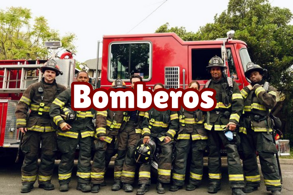

Bienvenido(a), en 'Seguridad publica Coacalco' nos encargamos de tu bienestar, puedes realizar cualquier demanda o reporte.
≡≡≡ ATENCIÓN ≡≡≡
C
I
U
D
A
D
A
N
A
- Nuestra misión es: -
Proteger la integridad de los ciudadanos dentro del Municipio de Coacalco, respondiendo a las necesidades actuales, mediante un eficaz, eficiente, profesional y humanitario servicio, cumpliendo con el compromiso a través de la prevención, combate y extinción de incendios, así como proporcionar servicios de emergencias; búsqueda y rescate; educación a la ciudadanía en cultura de la prevención; atención de desastres técnicos, sociales, naturales, públicos y/o privados. Preservar el orden público legalmente establecido, así como los derechos y la seguridad de las personas y entidades y de sus bienes. Recuperar de una manera segura a niños desaparecidos, en peligro o sustraídos a través de esfuerzos coordinados de las autoridades, los medios de comunicación, transporte y otros socios, utilizando capacitación y tecnología para mejorar las habilidades y capacidades de respuesta. Dar prevención e investigación de los delitos; ejecutar mandatos de la autoridad competente y bajo dirección judicial. Desde luego, otorgar atención médica de calidad, con recursos especializados y tecnología de vanguardia. Distribución y comercialización de energía eléctrica socialmente responsable. De esta manera contribuiremos a mejorar la calidad de vida de las personas y por supuesto utilizando todos los recursos asignados al organismo, con la finalidad de proporcionar un servicio a la comunidad de calidad.

- Nuestra visión es: -
Establecer un sitio web capacitado en atención de alta especialidad; que responda con sentido humanista a las necesidades del usuario y del personal con servidores públicos que tengan una preparación adecuada con emergencias reales, a fin de alcanzar los niveles óptimos de calidad, con el propósito de ofrecer tranquilidad y satisfacción de la comunidad a través de la seguridad, anticipación, innovación, excelencia y mejora continua.
- Servicios -
En Coacalco contamos con diversos servicios que ayudan a la comunidad. Existen diversos problemas y es por eso que en "Seguridad Ciudadana Coacalco" nos encargamos de dar solución a todos y cada uno de ellos.
SERVICIO POLICIAL
Es un servicio público, a cargo del Estado, encaminado a mantener y garantizar el libre ejercicio de las
libertades públicas y la convivencia pacífica de todos los habitantes
CONSULTAR INFORMACIÓN

BOMBEROS
Prevenir y combatir incendios. Auxiliar a las personas
y sus bienes ante incendios, accidentes, desastres,
calamidades públicas y otros.
CONSULTAR INFORMACIÓN
SERVICIO MEDICO
Conjunto de servicios que se proporcionan al individuo para prevenir, tratar o rehabilitar de una enfermedad
CONSULTAR INFORMACIÓN
ALERTA AMBER
Las Alertas AMBER
se activan en los casos más graves de secuestro infantil.
El objetivo de la Alerta AMBER es impulsar a la comunidad
a que colabore en la búsqueda de un niño perdido para
recuperarlo sano y salvo.
CONSULTAR INFORMACIÓN

SERVICIO DE ELECTRICIDAD
El servicio público de energía eléctrica es un servicio público propio, por estar regulado en una ley, y cuyo objetivo
es satisfacer una necesidad de carácter general, así
como por estar atribuida dicha prestación a la
Federación por conducto de la Comisión Federal
de Electricidad.
CONSULTAR INFORMACIÓN
Estos servicios son auxiliares en la comunidad para satisfacer y cumplir con la seguridad e integridad de los ciudadanos habitantes de Coacalco.
¿Necesitas ayuda? Consulta información del servicio que necesites y solicita atención inmediatamente.
- NOTICIA -
¿Quieres saber como está la seguridad en México? enterate con un video informativo:
AUDIO ¿Cómo se activa una alerta amber?: